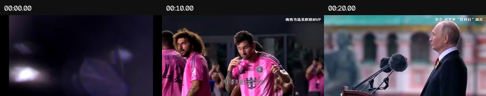
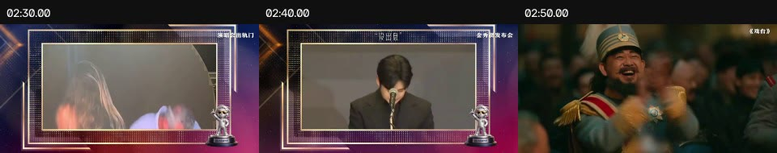
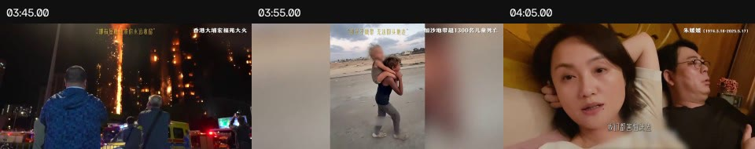
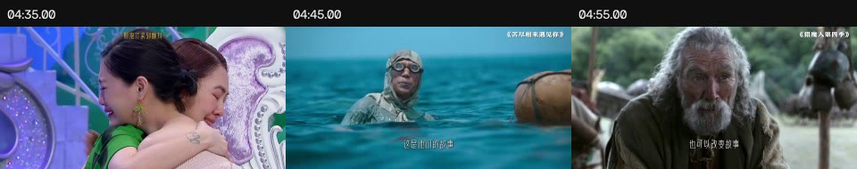
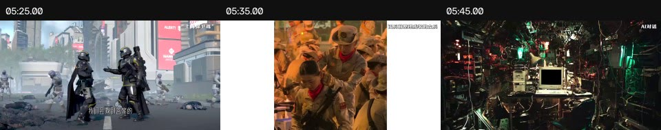
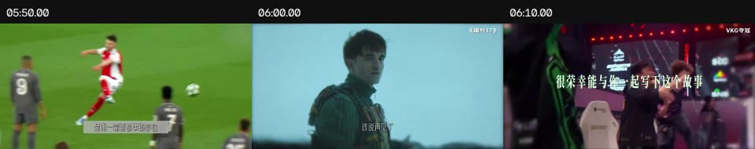

样片不是匀速快剪，而是一次“加速—熄火—再点亮”
原片已下载并核验为可解码视频：6分32.867秒、1920×960、30fps，含独立音轨。镜头数来自场景检测硬切候选，闪白、镜内转场与数字推拉仍需人工判断；因此数据用于节奏研究，不等同于作者工程文件。
章节镜头密度
最关键的反差
序章约 106.6 镜/分，黑场转轴降到 21.8 镜/分，后半段普通人章节约 32 镜/分。观众不是被一直轰炸，而是在高速信息后被迫停下来“感受”。
末段只有3个检测镜头，平均约4.98秒。它用显著拉长的镜头完成回环，而不是继续堆高潮。
音轨的0.5秒峰值多次触顶，说明成片响度非常激进；本报告只把它当动态走势参考，不建议照搬峰值。
每5秒画面概览
每张图含三个抽样时刻，目的是看主题、色彩和人物比例的迁移；它不是逐镜头清单。完整355镜清单见文末CSV。






样片的12章结构，以及你该“抄”的东西
| 章 | 样片章节 | 镜头 | 均长 | 镜/分 | 为什么有效 | 家族企业版怎么转译 |
|---|---|---|---|---|---|---|
| 01 | 提问式序章00:00.000—00:19.133 | 34 | 0.563s | 106.6 | 高密度冷开场先抛问题，不解释；用电影/新闻对话做声桥，0.4—0.8秒连续闪回。 | 旧厂门、钥匙、父亲手、账本、孩子在车间的背影；问题是“你看见了什么？” |
| 02 | 世界进入高压新闻流00:19.133—00:49.467 | 27 | 1.123s | 53.4 | 宏大事件流用新闻播报、标题、爆炸性画面建立“这一年很大”。 | 1978、1988、1992三次制度门槛，用政策原文和时代街景建立可信度。 |
| 03 | 互联网、文化与科技加速00:49.467—01:31.333 | 53 | 0.79s | 76.0 | 文化/科技加速素材异质但由共同音乐脉冲、字幕版式和动作匹配统一。 | 市场、广告、生产线、订单、证券、城市化；剪出“增长速度”。 |
| 04 | AI与集体想象01:31.333—02:07.233 | 36 | 0.997s | 60.2 | 主题集中把一组同主题素材连续堆叠，形成章节内部的小高潮。 | 2001入世、出口、全球化、互联网；画面运动方向尽量一致。 |
| 05 | 娱乐、胜负与上半场高潮02:07.233—03:14.433 | 70 | 0.96s | 62.5 | 上半场总高潮约一分钟持续刺激后必须兑现一次真正的停顿。 | 危机、代际分歧、治理、疫情、数字化、AI，把“做大”转成“怎么走远”。 |
| 06 | 黑场转轴03:14.433—03:22.700 | 3 | 2.756s | 21.8 | 黑场转轴8秒内镜头骤减、响度回落，让观众从世界事件切回人的命运。 | 厂声突然停止；钥匙落桌；黑底字：“可企业的故事，最终要交给谁？” |
| 07 | 宏大叙事落回普通人03:22.700—04:07.600 | 24 | 1.871s | 32.1 | 普通人的长镜头平均镜头接近前半段两倍，人物表情和动作完成后再切。 | 父亲巡厂、母亲记账、孩子学艺、员工合影；让“家”进入“企业”。 |
| 08 | 失去、纪念与告别04:07.600—04:35.767 | 15 | 1.878s | 32.0 | 失去与纪念不煽情堆哭脸，留空椅、旧招牌、停产线等可承受的物证。 | 失败、退休、离开、被时代淘汰；避免未经授权指向具体企业。 |
| 09 | 守护、重逢与希望04:35.767—05:36.333 | 52 | 1.165s | 51.5 | 重建与希望镜头重新变快，但情绪不是热闹，而是‘仍有人接住’。 | 二代回归、女性接班、职业经理人、数字工厂、三代同框。 |
| 10 | 人类为何需要故事05:36.333—05:59.200 | 20 | 1.143s | 52.5 | 回答问题用一段简短对话把主题从事件升级为意义。 | “为什么还要把这些故事写下来？”—“因为企业会交棒，经验会遗失。” |
| 11 | 答案蒙太奇05:59.200—06:17.933 | 18 | 1.041s | 57.7 | 答案蒙太奇每个镜头都是前文答案：手、眼神、合影、签字、书页。 | 把丛书内容和真实家族企业人物交叉，不要连续十几秒只拍书。 |
| 12 | 回环收束与片尾06:17.933—06:32.867 | 3 | 4.978s | 12.1 | 长镜头收束最后镜头显著拉长，回到开场意象，给书名和发布信息呼吸。 | 同一扇厂门从夜到晨；书从旧账本旁被翻开；发布主视觉出现。 |
你的核心改写：从“这一年”变成“四十余年与三代人”
样片的内在问题
一年发生了如此多的事，人类为什么仍需要故事？
回答：因为会遗忘，所以需要记录、怀念与再次理解。
家族企业版的内在问题
时代给过很多机会，一家公司为什么仍可能走不过两代人？
回答：机会能让企业开始，治理、责任与被记录的经验，才能让它继续。
备选：《他们把一生，写进同一个名字》 / 《1978—今天，谁在接住中国家族企业？》
“最好的礼物”不要一上来直说。先让观众看见创业者付出的时间、家庭承担的代价、下一代面对的难题，再说“这是我们能给出的礼物”，可信度更高。
可直接照着建时间线的36段执行表
时长与样片完全同构，内容、文案和视觉资产全部重新原创。先用占位素材做粗剪，等旁白与节奏成立后再替换为授权史料。
| # | 时间 | 任务 / 画面 | 旁白 | 切法 | 声音 | 字幕/花字 |
|---|---|---|---|---|---|---|
| 01 | 00:00.000至 00:04.000 | 冷开场黑暗厂房里一束手电扫过旧门牌；金属钥匙特写 | 告诉我，你看见了什么？ | 0.4—0.8秒闪回；最后一帧停1秒 | 远处厂房低频＋钥匙落桌；音乐先不进 | 白色小字逐字显现 |
| 02 | 00:04.000至 00:10.000 | 建立人物老照片、年轻创业者、孩子在车间门口、第一本账簿 | 一排厂房？一块旧招牌？ | 动作匹配：抬头/开门/翻页 | 纸张、卷帘门、老式收音机声桥 | 年份不出现，只给物证 |
| 03 | 00:10.000至 00:19.133 | 抛核心问题父亲背影→全家合影→厂门人潮→黑底标题 | 还是一个家庭，把最好的年华，交给了同一件事？ | 尾字落下时切黑 | 第一记低鼓进入 | 主标题：一家公司，能走多远？ |
| 04 | 00:19.133至 00:27.000 | 时代开门1978官方史料、街道、作坊、手写订单 | 1978，改革开放拉开帷幕。 | 新闻资料3—5帧叠化＋硬切 | 广播底噪转为规律脉冲 | 1978｜门被推开 |
| 05 | 00:27.000至 00:36.000 | 法律确认1988宪法文本关键词、工商登记、盖章 | 1988，国家允许私营经济在法律规定的范围内存在和发展。 | 文字与印章动作同步 | 盖章重音；音乐低音加厚 | 关键词“存在和发展”放大110% |
| 06 | 00:36.000至 00:49.467 | 市场加速1992大会资料、证券大厅、沿海城市、货车 | 1992，建立社会主义市场经济体制，成为改革目标。 | 0.6—1.0秒/镜；运动方向左→右 | 新闻播报碎片做J-cut | 1992｜市场的风吹了起来 |
| 07 | 00:49.467至 01:00.000 | 创业潮店铺开门、焊花、缝纫机、父母轮班、第一批员工 | 有人从一张桌子、一间作坊、一辆自行车开始。 | 每句名词对应一镜；三连切 | 机械节拍变成音乐打击 | 不打企业名，先打“开始” |
| 08 | 01:00.000至 01:12.000 | 规模生长生产线、厂房扩建、电话传真、订单堆叠 | 家庭的决定，慢慢变成几百个人的工作。 | 广角—中景—手部特写循环 | 环境声每4秒露出一次 | 人数不写具体数字 |
| 09 | 01:12.000至 01:22.000 | 品牌诞生旧广告、展销会、产品迭代、第一块品牌招牌 | 名字被印在产品上，也被写进一座城的记忆里。 | 图形匹配：圆形标志/机器转轮 | 磁带启停音＋人群掌声 | 花字只打：名字 / 记忆 |
| 10 | 01:22.000至 01:31.333 | 身份变化1999宪法资料、厂门队伍、管理会议 | 1999，非公有制经济成为社会主义市场经济的重要组成部分。 | 政策原文2秒可读，再回人物 | 音乐第一次抬升 | 从“允许”到“重要组成部分” |
| 11 | 01:31.333至 01:42.000 | 全球化开门WTO会场、2001日期、港口吊机 | 2001，中国加入世界贸易组织。 | 日期落下切集装箱落锁 | 吊机撞锁作为重拍 | 2001｜世界的门打开了 |
| 12 | 01:42.000至 01:54.000 | 走向世界传真订单、地图航线、海外展会、工人装箱 | 一张订单，第一次跨过海；一个品牌，第一次被陌生人念出。 | 地图线条连接三个实拍镜头 | 无线电、船笛做远景声 | 字幕跟随地图路径 |
| 13 | 01:54.000至 02:07.233 | 数字化浪潮电脑、网店、扫码、自动化、直播与云端数据 | 互联网让市场变近，也让变化变得更快。 | 屏幕录制不超过2秒；快速推近 | 键盘点击并入hi-hat | 互联网 / 电商 / 数字化 三拍 |
| 14 | 02:07.233至 02:20.000 | 风险出现金融新闻、订单取消、空厂房、价格曲线 | 但每一次打开，都伴随着一次重新选择。 | 快切中插入1.5秒空镜 | 音乐和弦转暗；去掉高频 | 不列灾难，用“选择”承上启下 |
| 15 | 02:20.000至 02:34.000 | 治理问题家族会议、股权图、董事会、争执后沉默 | 亲情能让人一起出发，却不能替代规则。 | 对视反打；切点落在犹豫而非说完 | 钟表、翻纸、轻微耳鸣 | 花字：亲情 ≠ 规则 |
| 16 | 02:34.000至 02:50.000 | 交棒冲突父亲签字、孩子回国、办公室两把椅子、老员工 | 第一代问：你守得住吗？下一代问：为什么一定要照旧？ | 父子视线匹配；台词跨画面 | 音乐留出两处半秒真空 | 问题句分屏出现 |
| 17 | 02:50.000至 03:03.000 | 共同危机停摆厂区、线上会议、复工、员工测温、供应链 | 有些年份，让所有计划在一夜之间失效。 | 先慢后快；复工画面开始加速 | 呼吸、通知提示、机器重启 | 年份可打2020，避免煽情素材滥用 |
| 18 | 03:03.000至 03:14.433 | 上半场高潮机器人、实验室、AI界面、年轻团队、老产品并列 | 而新的问题已经到来：全球化、智能化，以及下一次交棒。 | 0.4—0.7秒连击，末镜突然延长 | 密集鼓点→机器断电 | 全球化 / 智能化 / 传承 |
| 19 | 03:14.433至 03:22.700 | 黑场转轴钥匙放在桌上；黑场；空椅；一只年轻的手伸入画面 | 可企业的故事，最终要交给谁？ | 前2秒黑场；每镜2.5秒以上 | 断电声后保留房间底噪；音乐最低 | 黑底白字，静止，不做炫技动画 |
| 20 | 03:22.700至 03:36.000 | 回到创始人布满老茧的手、旧笔记、清晨巡厂、背影 | 宏大的时代，最后都落在一个人的手上。 | 让动作完整发生后再切 | 脚步与晨间环境声 | 取消大花字，只保留小字幕 |
| 21 | 03:36.000至 03:50.000 | 家庭代价深夜餐桌、母亲记账、孩子睡着、空座位 | 那双手开过门，也错过饭桌，错过生日，错过许多个夜晚。 | 同一构图跨年代叠化 | 碗筷、钟声、远处机器 | 日期手写体淡入淡出 |
| 22 | 03:50.000至 04:07.600 | 传承不是仪式师徒示范、车间学习、家族会议、员工提问 | 传承不是把钥匙递出去，而是让责任被另一双手真正接住。 | 手部动作匹配：递工具/签字/握手 | 钢琴主题第一次完整出现 | 责任 二字最后出现 |
| 23 | 04:07.600至 04:18.000 | 承认失去褪色招牌、关灯、空厂、旧合影 | 不是每个名字都等到了下一章。 | 镜头1.8—2.5秒；不快切 | 低频退场，留风声 | 不出现未经证实的企业名称 |
| 24 | 04:18.000至 04:28.000 | 纪念退休背影、旧员工相册、被保存的工牌与工具 | 有人离开，有人停下，也有人把失败留成后来者的路标。 | 物件特写替代哭脸 | 纸张、抽屉、呼吸 | 失败 → 路标 |
| 25 | 04:28.000至 04:35.767 | 情绪谷底黑屏上逐个出现：信任 / 规则 / 选择 / 告别 | 这也是家族企业的故事。 | 每词1.5秒，最后黑0.7秒 | 几乎静音 | 纯排版段落 |
| 26 | 04:35.767至 04:50.000 | 重新接住年轻继任者穿工作服、老员工教操作、两代并肩 | 可总有人愿意回来，从头学会那台机器，重新认识那些人。 | 速度从2秒/镜升到1.2秒/镜 | 钢琴＋温暖弦乐逐层进入 | “回来”轻推近 |
| 27 | 04:50.000至 05:06.000 | 新治理女性接班人、职业经理人、外部董事、制度文件、研发评审 | 他们带回新的语言：治理、专业、创新，也重新理解旧一代的坚持。 | 名词不做PPT；每词必须有人物动作承接 | 会议现场声穿插 | 治理 / 专业 / 创新 |
| 28 | 05:06.000至 05:20.000 | 共同体一线员工、供应商、客户、社区、家庭合影 | 因为被交付的，从来不只是股权，还有许多人的生活。 | 目光匹配；由个体扩到群像 | 人群声和音乐同升 | 股权 → 生活 |
| 29 | 05:20.000至 05:36.333 | 走向未来绿色工厂、全球团队、实验室、三代同框、厂门清晨 | 一家企业真正的长度，不在报表里，而在一代人愿意为下一代留下什么。 | 镜头逐渐变长；回到开场厂门 | 主题旋律抬高但不爆 | 长度 / 留下 |
| 30 | 05:36.333至 05:42.000 | 第二次提问采访者画外音；桌上放旧账本与未装订书稿 | 我们为什么还要把这些故事写下来？ | 固定镜头，不切 | 音乐避让8—10dB | 问句居中 |
| 31 | 05:42.000至 05:51.000 | 回答创始人与继任者无声对视；翻开书稿 | 因为企业会交棒，经验会遗失；而被写下的，才有机会被后来者重新理解。 | 在“遗失”处停0.5秒 | 翻页声成为重音 | 交棒 / 遗失 / 写下 |
| 32 | 05:51.000至 05:59.200 | 产品第一次出现丛书装帧细节、目录、采访原稿、批注 | 于是，我们把四十多年的问题、选择与答案，编成一套书。 | 不要正面摆拍全套；先给细节 | 纸张摩擦＋弦乐上行 | 《家族企业丛书》名称占画面1/3 |
| 33 | 05:59.200至 06:08.000 | 答案蒙太奇书页关键词与真实人物/车间/家庭动作交叉 | 它不替任何家庭做决定，只希望在关键时刻，给你多一种看见。 | 一词一镜；关键词来自真实目录 | 每次翻页对应一次切点 | 治理 / 传承 / 创新 / 长青 |
| 34 | 06:08.000至 06:17.933 | 献礼多组家庭与员工望向镜头；书在不同真实场景出现 | 献给中国家族企业，也献给每一个仍在回答‘如何走得更远’的家庭。 | 人物镜头1.2—1.8秒；最后合影延长 | 音乐抵达情绪峰值 | 避免“最好”自夸，改为“我们能给出的礼物” |
| 35 | 06:17.933至 06:25.000 | 最终揭晓全套丛书英雄镜头；旧账本与新书并置 | 这是一份写给现在，也写给未来的礼物。 | 单镜头7秒；轻微推近3% | 鼓点停止，只留主题和翻页 | 书名、主编、出版社、发布日期 |
| 36 | 06:25.000至 06:32.867 | 回环片尾同一扇厂门从夜到晨；片尾发布信息 | 因为时代会向前，而故事，值得被接着写下去。 | 回到第一镜构图；淡出 | 晨间环境声收尾 | 发布会时间/地点/二维码占安全区 |
前60秒逐刀练习：先只剪这一分钟
不要从六分半开工。先把前60秒剪到“关闭字幕也能懂、关闭画面也能听懂、两者合起来有第三层意义”，再向后复制语法。
| 入点 | 出点 | 画面 | 叙事任务 | 执行标准 |
|---|---|---|---|---|
| 00:00.0 | 00:00.4 | 黑屏＋极短呼吸 | 不给信息，先制造“有人要回答”的感觉 | 不要加转场；全黑 |
| 00:00.4 | 00:01.2 | 旧厂门被手电扫到 | 建立空间与年代质感 | 亮区面积不超过画面20% |
| 00:01.2 | 00:01.5 | 钥匙齿口超特写 | 第一个视觉重音 | 跟金属声切 |
| 00:01.5 | 00:01.9 | 年轻创业者旧照 | 人物第一次出现 | 做2.5D轻推近，不做花哨故障 |
| 00:01.9 | 00:02.3 | 账本数字 | 企业物证 | 镜头内扫光匹配上一镜 |
| 00:02.3 | 00:02.8 | 孩子站在厂门口 | 把“家”植入“企业” | 视线朝右，为下一镜留方向 |
| 00:02.8 | 00:03.1 | 焊花爆亮 | 闪白型自然转场 | 只用素材自身亮度 |
| 00:03.1 | 00:04.0 | 黑场问句 | 让观众听清核心问题 | 白字打字不超过8字/屏 |
| 00:04.0 | 00:06.0 | 父亲/母亲/孩子三张旧照 | 一秒一人，建立家庭单位 | 同一眼位对齐 |
| 00:06.0 | 00:08.0 | 机器、饭桌、空椅 | 预告事业的代价 | 用J-cut先听到碗筷声 |
| 00:08.0 | 00:10.0 | 厂门全景 | 第一次给完整空间 | 镜头延长，让观众换气 |
| 00:10.0 | 00:13.0 | 人潮/员工入厂 | 企业从家庭扩到共同体 | 人流方向保持一致 |
| 00:13.0 | 00:16.0 | 全家合影叠化为员工合影 | 完成概念变形 | 只做12帧交叉溶解 |
| 00:16.0 | 00:19.1 | 黑底主标题 | 承诺影片主题 | 音乐第一拍落在标题最后一个字 |
| 00:19.1 | 00:23.0 | 1978官方史料＋城市街景 | 从私人进入时代 | 画面上标来源/年份 |
| 00:23.0 | 00:27.0 | 作坊、推车、第一张订单 | 政策后立刻回人 | 不要连续放四秒会议资料 |
| 00:27.0 | 00:31.0 | 1988宪法原文 | 建立事实锚点 | 重点词框选，停留至少1.5秒 |
| 00:31.0 | 00:36.0 | 工商盖章、店铺开门 | 把制度变化变成可见动作 | 盖章做节拍点 |
| 00:36.0 | 00:42.0 | 1992史料→证券大厅 | 市场加速 | 动作匹配＋0.6—0.9秒切镜 |
| 00:42.0 | 00:49.5 | 城市、货车、工人、广告 | 形成第一轮视觉高潮 | 四种景别循环，避免全是大全景 |
| 00:49.5 | 00:54.0 | 小作坊人物 | 第二章从宏大落回个人 | 先听机器，再切画面 |
| 00:54.0 | 01:00.0 | 桌子/作坊/自行车三连切 | 用名词列举建立记忆点 | 每个名词对应唯一镜头与音效 |
高度接近质感，靠的是声音连续性与克制的花字
建议的三段原创音乐
A｜时代脉冲 00:19—03:14
低频脉冲、颗粒打击、逐步加密；不复制样片曲目。每16—24秒增加一层，避免从头满配。
B｜家庭主题 03:22—05:36
钢琴/温暖持续音为主，保留真实环境声。重点是“人”，不是煽情。
C｜回答与发布 05:36—06:32
重现B段旋律并加入A段脉冲，表示时代与家庭终于合在一起。
声音剪辑规则
J-cut先闻其声L-cut让台词跨镜每章保留1次原声黑场是真静，不是小声音乐
提问、黑场、丛书揭晓三处让音乐避让约8—10dB；盖章、钥匙、机器启停、翻页是四个主导音效。不要每一刀都加whoosh。
建议交付响度从网络平台常见的约-14至-16 LUFS整体范围起测；这是制作建议，不是样片实测结论。
花字层级
L1 事实锚点：年份＋政策节点，静止或8—12帧轻推近。
L2 价值词：“亲情 ≠ 规则”“交棒 / 遗失 / 写下”，只在转折处出现。
L3 最终产品：书名、主编、出版社、发布日期，最后15秒才完整出现。
统一画面的办法
史料统一做“原色保留＋轻颗粒＋统一黑位”，不要把所有年代片强行套同一个重滤镜。现代素材保持中性，家庭段稍暖，黑场段彻底降饱和。
转场优先级：素材内动作匹配 ＞ 声桥硬切 ＞ 亮度闪白 ＞ 简短叠化。插件转场放最后。
可以上屏的历史节点与证据边界
| 年份 | 可说事实 | 屏幕文案 | 素材提示 | 来源 |
|---|---|---|---|---|
| 1978 | 改革开放拉开帷幕。 | 1978｜门被推开 | 城市街景、早期工厂、手写账本、老式车间；不用把任意家庭作坊冒充具体企业。 | 全国哲学社会科学工作办公室：改革开放以来经济发展方式演进官方背景资料 |
| 1988 | 宪法修正案明确国家允许私营经济在法律规定范围内存在和发展。 | 1988｜第一次被明确写下 | 宪法文本、工商登记、旧招牌、盖章特写。 | 中国人大网：中华人民共和国宪法修正案（1988）法律原文 |
| 1992 | 党的十四大明确建立社会主义市场经济体制的改革目标。 | 1992｜市场的风，真正吹了起来 | 证券大厅、广告牌、南方城市、生产线提速、地图线路。 | 中国政府网：中国共产党第十四次全国代表大会官方历史资料 |
| 1999 | 宪法修正把个体经济、私营经济等非公有制经济明确为社会主义市场经济的重要组成部分。 | 1999｜从“允许”到“重要组成部分” | 宪法条文、企业注册潮、厂门人流。 | 中国人大网：改革开放40年的宪法发展与宪法实施官方释义 |
| 2001 | 中国于2001年12月11日成为世界贸易组织第143个成员。 | 2001｜世界的门，也打开了 | WTO会场、港口集装箱、订单传真、世界地图、出口流水线。 | WTO：China accession国际组织原始资料 |
| 2010 | 国务院相关意见进一步鼓励和引导民间投资，扩大市场准入。 | 2010｜从制造，走向更大的世界 | 跨境并购新闻、研发中心、交通与基础设施、海外工厂。 | 中国政府网：发展改革委就鼓励引导民间投资健康发展意见答问官方政策资料 |
| 2020/2021 | 民法典于2020年通过、2021年1月1日起施行，系统整合物权、合同、婚姻家庭、继承等民事法律规范。 | 2021｜财富之外，是治理与传承 | 合同、董事会、家族会议、遗嘱与传承工具的抽象镜头；不要暗示民法典专为家族企业制定。 | 中国人大网：中国民法典诞生法律发布资料 |
| 2023 | 中共中央、国务院发布促进民营经济发展壮大的意见，强调优化环境、保护产权和企业家权益。 | 2023｜信心，需要被看见 | 企业家座谈、智能制造、研发人员、厂区夜班。 | 中国政府网：关于促进民营经济发展壮大的意见中央文件 |
| 2025 | 民营经济促进法于2025年4月30日通过，自2025年5月20日起施行。 | 2025｜走进法治化的新一页 | 法律文本、企业研发与生产、不同代际经营者同框。 | 中国人大网：中华人民共和国民营经济促进法法律原文 |
6分32秒旁白初稿
这版把“丛书发布”写成前文问题的答案。正式录音前，要用真实书名、目录、主编与发布信息替换占位词，并按你们丛书的研究结论校正案例口径。
新手最有效的三遍练习
第一遍：无音乐剪故事
只放旁白、采访原声和黑场。任何一句删掉后逻辑更清楚，就删。目标：6分32秒里至少有25—35秒真正的无旁白空间。
第二遍：用声桥剪画面
先放声音，再让下一镜提前2—8帧出现。素材不足时先用色块＋文字占位，不要为了“有画面”塞无关B-roll。
第三遍：只检查情绪速度
把画面缩成邮票大小，不看内容，只看亮暗、人物比例与切镜密度。03:14必须像断电，03:22之后必须真的慢下来。
验收问题
开头的问题是否在结尾被回答？黑场前后是不是两个世界？丛书第一次完整露出是否晚于05:51？最后15秒是否有足够时间读完发布信息？
可继续剪辑的配套文件
36段时间码、画面、旁白、切法、声音、花字 旁白 TXT
可直接交给导演/配音继续修改 历史节点 CSV
事实、建议屏幕文案、素材提示和官方来源 样片镜头清单 CSV
真实入点、出点、时长、章节与关键帧路径 章节节奏 CSV
镜头密度、均长、中位数和音量概览 转写说明
为什么混合音轨ASR不能当作准确对白稿
版权提示：参考片只能用于学习结构。正式发布应使用自有、授权或明确许可的影像、新闻资料、音乐与字体；不要直接搬运样片镜头、原音乐和原字幕包装。